2023 Higher Physics - Paper 1 questions
Source: Scottish Qualifications Authority (SQA) / Qualifications Scotland. This is a StemInteract HTML companion, not an official HTML edition. Selectable text is supplied alongside original page images. Use the images or original PDF for equations, powers, fractions, vector notation, tables and diagrams; text extraction cannot fully preserve mathematical layout.
Jump to a question
PDF page 1
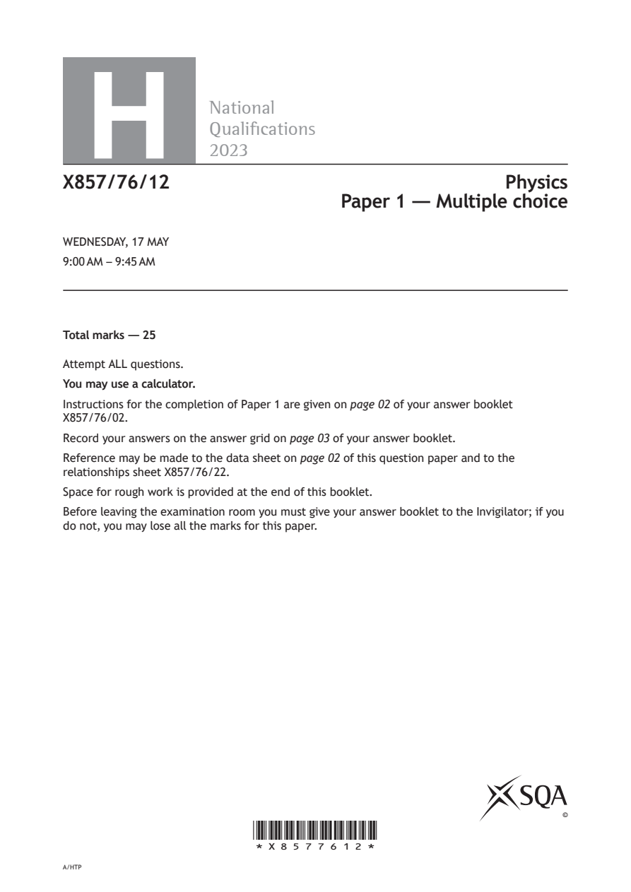
Selectable page text
H
National
Qualications
2023
X857/76/12 Physics
Paper 1 — Multiple choice
WEDNESDAY, 17 MAY
9:00 AM – 9:45 AM
Total marks — 25
Attempt ALL questions.
You may use a calculator.
Instructions for the completion of Paper 1 are given on page 02 of your answer booklet
X857/76/02.
Record your answers on the answer grid on page 03 of your answer booklet.
Reference may be made to the data sheet on page 02 of this question paper and to the
relationships sheet X857/76/22.
Space for rough work is provided at the end of this booklet.
Before leaving the examination room you must give your answer booklet to the Invigilator; if you
do not, you may lose all the marks for this paper.
©
*X8577612*
A/HTPPDF page 2
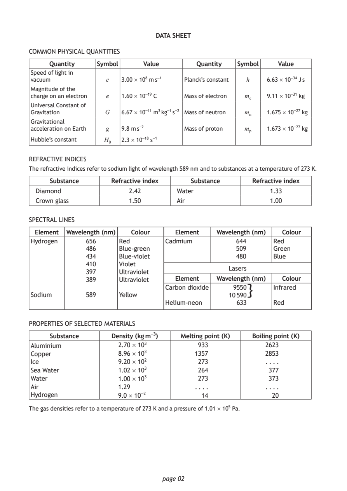
Selectable page text
DATA SHEET
COMMON PHYSICAL QUANTITIES
Quantity Symbol Value Quantity Symbol Value
Speed of light in
vacuum c 3.00 × 10⁸ m s⁻¹ Planck’s constant h 6.63 × 10⁻³⁴ J s
Magnitude of the
charge on an electron e 1.60 × 10⁻¹⁹ C Mass of electron mₑ 9.11 × 10⁻³¹ kg
Universal Constant of
Gravitation G 6.67 × 10⁻¹¹ m³ kg⁻¹ s⁻² Mass of neutron mₙ 1.675 × 10⁻²⁷ kg
Gravitational
acceleration on Earth g 9.8 m s⁻² Mass of proton mₚ 1.673 × 10⁻²⁷ kg
Hubble’s constant H₀ 2.3 × 10⁻¹⁸ s⁻¹
REFRACTIVE INDICES
The refractive indices refer to sodium light of wavelength 589 nm and to substances at a temperature of 273 K.
Substance Refractive index Substance Refractive index
Diamond 2.42 Water 1.33
Crown glass 1.50 Air 1.00
SPECTRAL LINES
Element Wavelength (nm) Colour Element Wavelength (nm) Colour
Hydrogen 656 Red Cadmium 644 Red
486 Blue-green 509 Green
434 Blue-violet 480 Blue
410 Violet
Lasers
397 Ultraviolet
389 Ultraviolet Element Wavelength (nm) Colour
Carbon dioxide 9550} Infrared
Sodium 589 Yellow 10 590
Helium-neon 633 Red
PROPERTIES OF SELECTED MATERIALS
Substance Density (kg m⁻³) Melting point (K) Boiling point (K)
Aluminium 2.70 × 10³ 933 2623
Copper 8.96 × 10³ 1357 2853
Ice 9.20 × 10² 273 . . . .
Sea Water 1.02 × 10³ 264 377
Water 1.00 × 10³ 273 373
Air 1.29 . . . . . . . .
Hydrogen 9.0 × 10⁻² 14 20
The gas densities refer to a temperature of 273 K and a pressure of 1.01 × 10⁵ Pa.
page 02PDF page 3
Paper 1, Question 1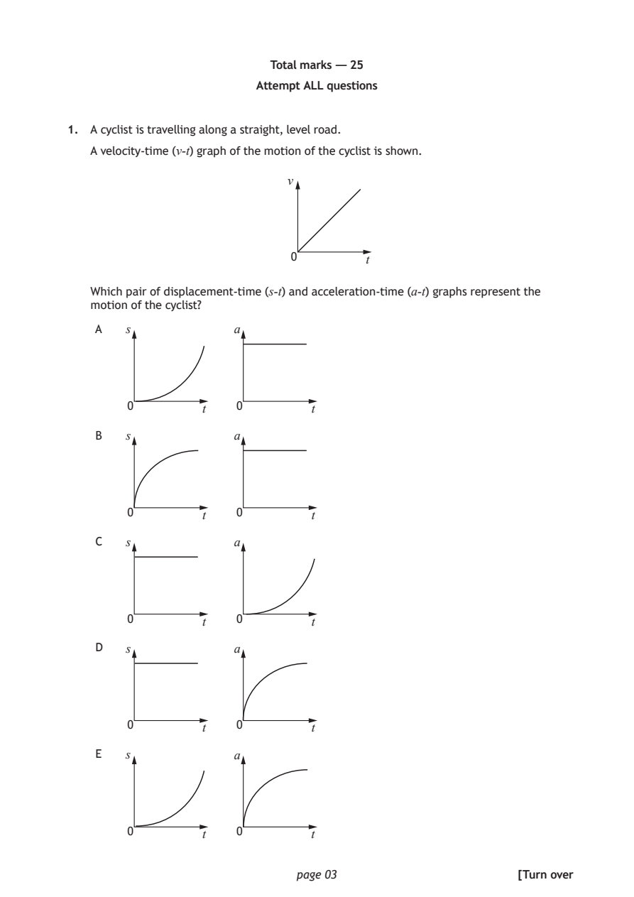
Selectable page text
Total marks — 25
Attempt ALL questions
1. A cyclist is travelling along a straight, level road.
A velocity-time (v-t) graph of the motion of the cyclist is shown.
v
0 t
Which pair of displacement-time (s-t) and acceleration-time (a-t) graphs represent the
motion of the cyclist?
A s a
0 t 0 t
B s a
0 t 0 t
C s a
0 t 0 t
D s a
0 t 0 t
E s a
0 t 0 t
page 03 [Turn overPDF page 4
Paper 1, Question 2Paper 1, Question 3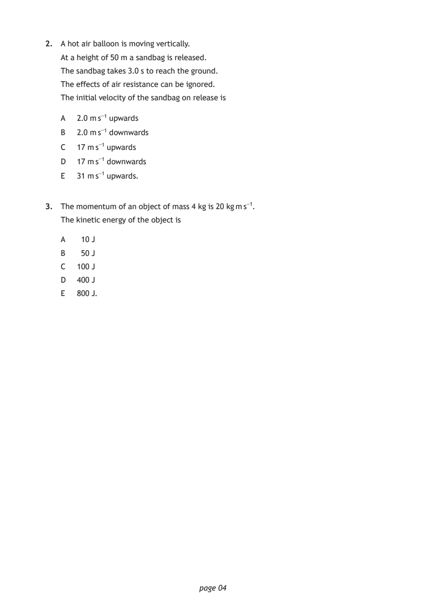
Selectable page text
2. A hot air balloon is moving vertically.
At a height of 50 m a sandbag is released.
The sandbag takes 3.0 s to reach the ground.
The effects of air resistance can be ignored.
The initial velocity of the sandbag on release is
A 2.0 m s⁻¹ upwards
B 2.0 m s⁻¹ downwards
C 17 m s⁻¹ upwards
D 17 m s⁻¹ downwards
E 31 m s⁻¹ upwards.
3. The momentum of an object of mass 4 kg is 20 kg m s⁻¹.
The kinetic energy of the object is
A 10 J
B 50 J
C 100 J
D 400 J
E 800 J.
page 04PDF page 5
Paper 1, Question 4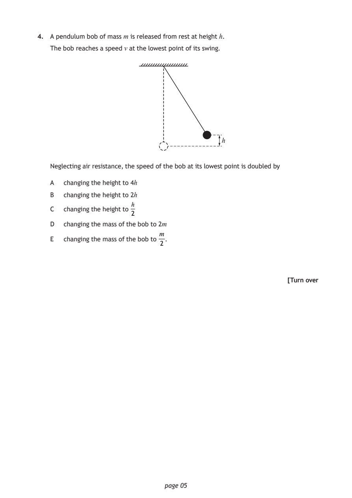
Selectable page text
4. A pendulum bob of mass m is released from rest at height h.
The bob reaches a speed v at the lowest point of its swing.
h
Neglecting air resistance, the speed of the bob at its lowest point is doubled by
A changing the height to 4h
B changing the height to 2h
h
C changing the height to
2
D changing the mass of the bob to 2m
m
E changing the mass of the bob to .
2
[Turn over
page 05PDF page 6
Paper 1, Question 5Paper 1, Question 6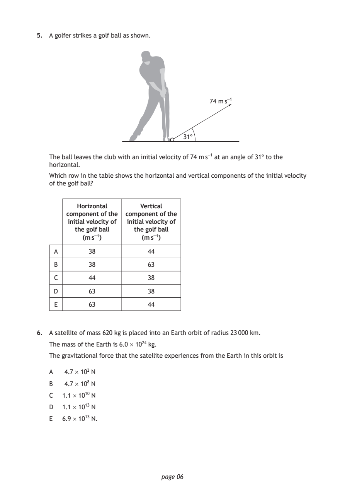
Selectable page text
5. A golfer strikes a golf ball as shown.
74 m s⁻¹
31°
The ball leaves the club with an initial velocity of 74 m s⁻¹ at an angle of 31° to the
horizontal.
Which row in the table shows the horizontal and vertical components of the initial velocity
of the golf ball?
Horizontal Vertical
component of the component of the
initial velocity of initial velocity of
the golf ball the golf ball
(m s⁻¹) (m s⁻¹)
A 38 44
B 38 63
C 44 38
D 63 38
E 63 44
6. A satellite of mass 620 kg is placed into an Earth orbit of radius 23 000 km.
The mass of the Earth is 6.0 × 10²⁴ kg.
The gravitational force that the satellite experiences from the Earth in this orbit is
A 4.7 × 10² N
B 4.7 × 10⁸ N
C 1.1 × 10¹⁰ N
D 1.1 × 10¹³ N
E 6.9 × 10¹³ N.
page 06PDF page 7
Paper 1, Question 7Paper 1, Question 8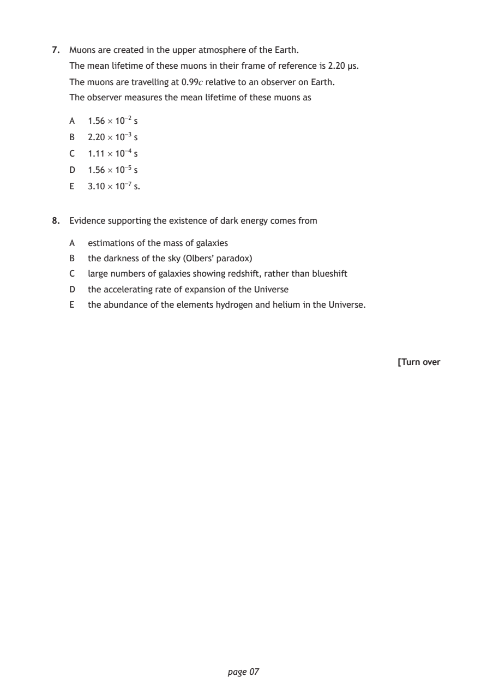
Selectable page text
7. Muons are created in the upper atmosphere of the Earth.
The mean lifetime of these muons in their frame of reference is 2.20 µs.
The muons are travelling at 0.99c relative to an observer on Earth.
The observer measures the mean lifetime of these muons as
A 1.56 × 10⁻² s
B 2.20 × 10⁻³ s
C 1.11 × 10⁻⁴ s
D 1.56 × 10⁻⁵ s
E 3.10 × 10⁻⁷ s.
8. Evidence supporting the existence of dark energy comes from
A estimations of the mass of galaxies
B the darkness of the sky (Olbers’ paradox)
C large numbers of galaxies showing redshift, rather than blueshift
D the accelerating rate of expansion of the Universe
E the abundance of the elements hydrogen and helium in the Universe.
[Turn over
page 07PDF page 8
Paper 1, Question 9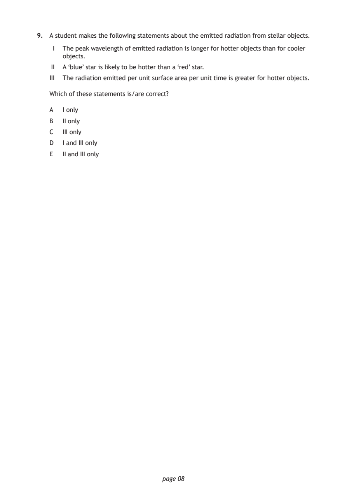
Selectable page text
9. A student makes the following statements about the emitted radiation from stellar objects.
I The peak wavelength of emitted radiation is longer for hotter objects than for cooler
objects.
II A ‘blue’ star is likely to be hotter than a ‘red’ star.
III The radiation emitted per unit surface area per unit time is greater for hotter objects.
Which of these statements is/are correct?
A I only
B II only
C III only
D I and III only
E II and III only
page 08PDF page 9
Paper 1, Question 10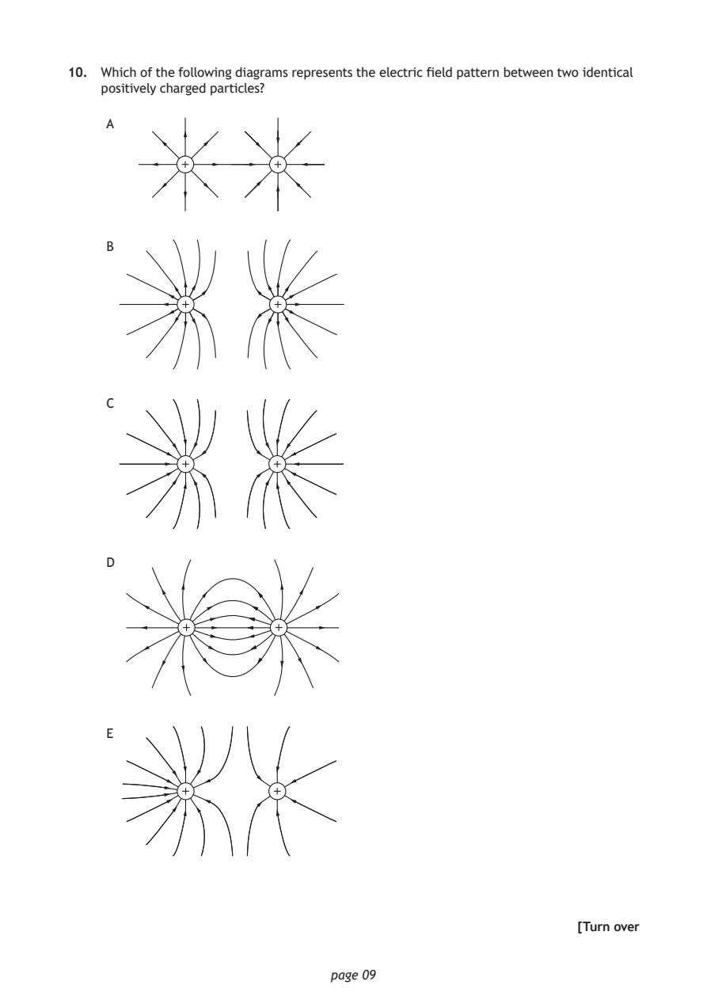
Selectable page text
10. Which of the following diagrams represents the electric field pattern between two identical
positively charged particles?
A
B
C
D
E
[Turn over
page 09PDF page 10
Paper 1, Question 11Paper 1, Question 12Paper 1, Question 13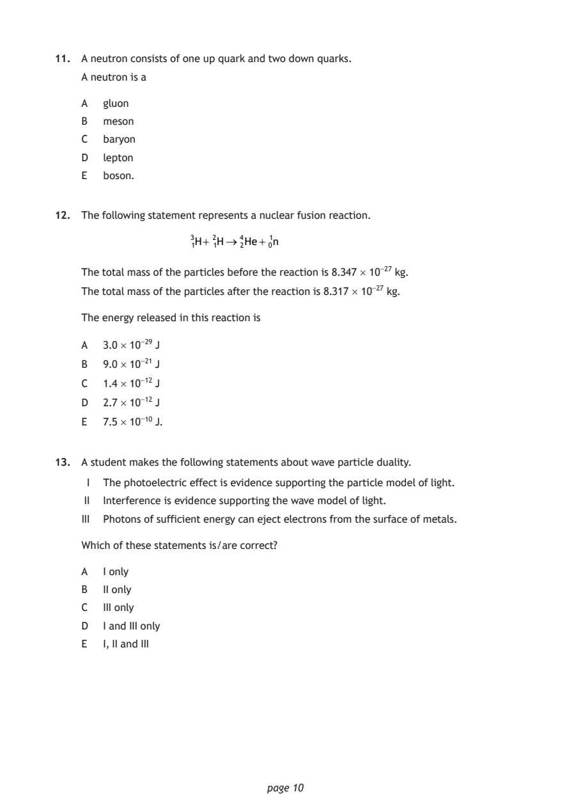
Selectable page text
11. A neutron consists of one up quark and two down quarks.
A neutron is a
A gluon
B meson
C baryon
D lepton
E boson.
12. The following statement represents a nuclear fusion reaction.
3H+ ²₁H→⁴₂He+₀¹n
1
The total mass of the particles before the reaction is 8.347 × 10⁻²⁷ kg.
The total mass of the particles after the reaction is 8.317 × 10⁻²⁷ kg.
The energy released in this reaction is
A 3.0 × 10⁻²⁹ J
B 9.0 × 10⁻²¹ J
C 1.4 × 10⁻¹² J
D 2.7 × 10⁻¹² J
E 7.5 × 10⁻¹⁰ J.
13. A student makes the following statements about wave particle duality.
I The photoelectric effect is evidence supporting the particle model of light.
II Interference is evidence supporting the wave model of light.
III Photons of sufficient energy can eject electrons from the surface of metals.
Which of these statements is/are correct?
A I only
B II only
C III only
D I and III only
E I, II and III
page 10PDF page 11
Paper 1, Question 14Paper 1, Question 15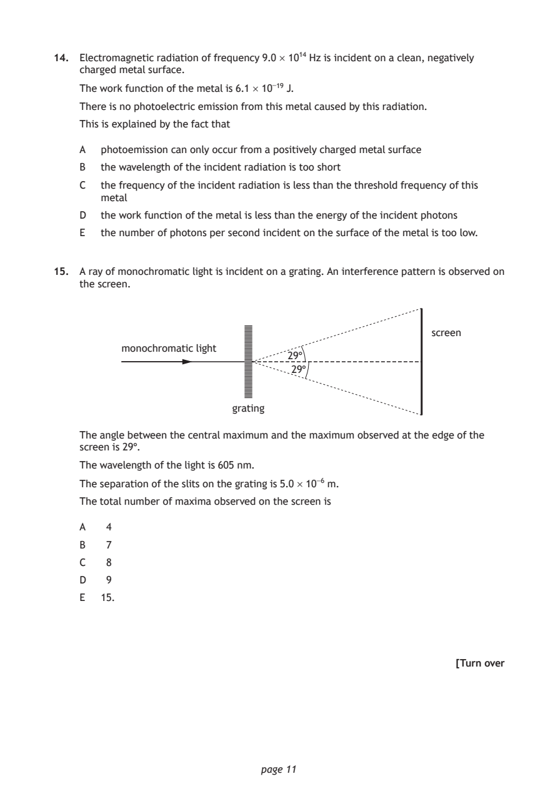
Selectable page text
14. Electromagnetic radiation of frequency 9.0 × 10¹⁴ Hz is incident on a clean, negatively
charged metal surface.
The work function of the metal is 6.1 × 10⁻¹⁹ J.
There is no photoelectric emission from this metal caused by this radiation.
This is explained by the fact that
A photoemission can only occur from a positively charged metal surface
B the wavelength of the incident radiation is too short
C the frequency of the incident radiation is less than the threshold frequency of this
metal
D the work function of the metal is less than the energy of the incident photons
E the number of photons per second incident on the surface of the metal is too low.
15. A ray of monochromatic light is incident on a grating. An interference pattern is observed on
the screen.
screen
monochromatic light
29°
29°
grating
The angle between the central maximum and the maximum observed at the edge of the
screen is 29°.
The wavelength of the light is 605 nm.
The separation of the slits on the grating is 5.0 × 10⁻⁶ m.
The total number of maxima observed on the screen is
A 4
B 7
C 8
D 9
E 15.
[Turn over
page 11PDF page 12
Paper 1, Question 16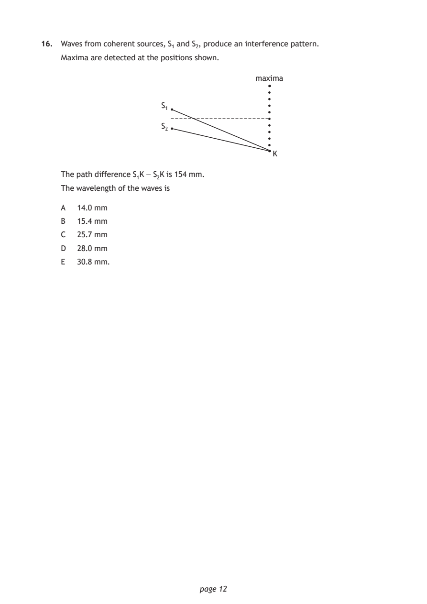
Selectable page text
16. Waves from coherent sources, S₁ and S₂, produce an interference pattern.
Maxima are detected at the positions shown.
maxima
S₁
S₂
K
The path difference S₁K − S₂K is 154 mm.
The wavelength of the waves is
A 14.0 mm
B 15.4 mm
C 25.7 mm
D 28.0 mm
E 30.8 mm.
page 12PDF page 13
Paper 1, Question 17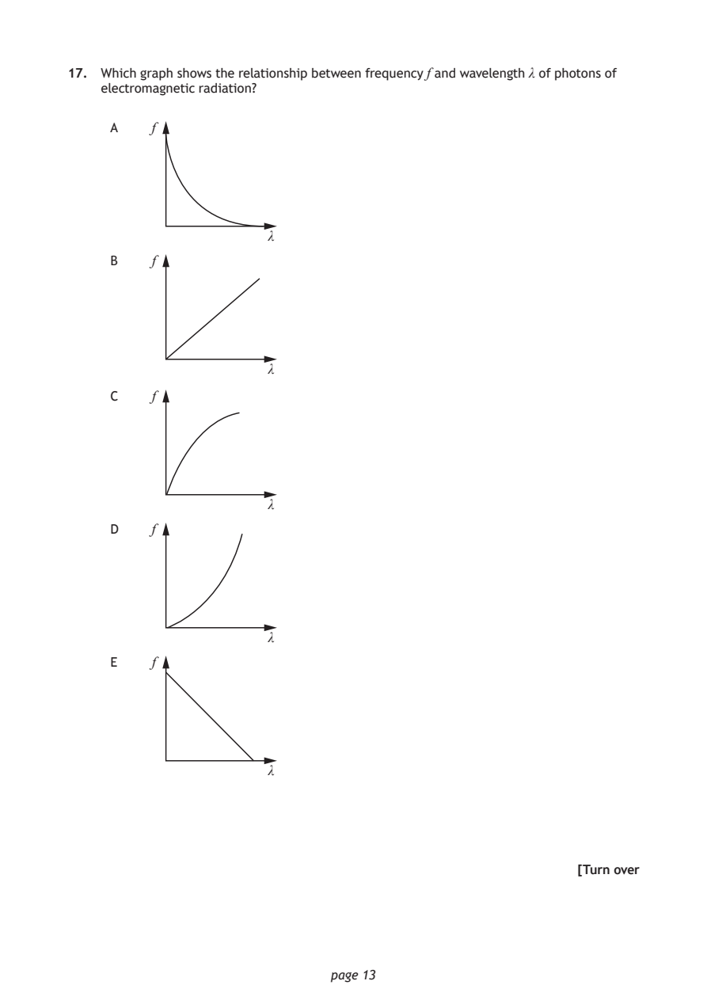
Selectable page text
17. Which graph shows the relationship between frequency f and wavelength λ of photons of
electromagnetic radiation?
A f
λ
B f
λ
C f
λ
D f
λ
E f
λ
[Turn over
page 13PDF page 14
Paper 1, Question 18Paper 1, Question 19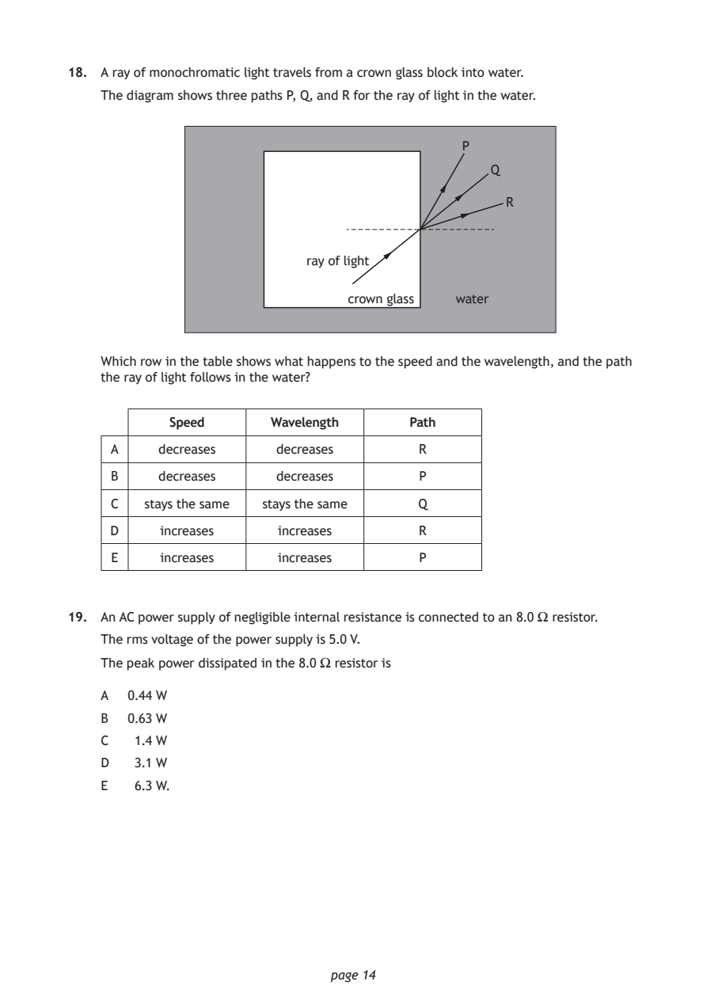
Selectable page text
18. A ray of monochromatic light travels from a crown glass block into water.
The diagram shows three paths P, Q, and R for the ray of light in the water.
P
Q
R
ray of light
crown glass water
Which row in the table shows what happens to the speed and the wavelength, and the path
the ray of light follows in the water?
Speed Wavelength Path
A decreases decreases R
B decreases decreases P
C stays the same stays the same Q
D increases increases R
E increases increases P
19. An AC power supply of negligible internal resistance is connected to an 8.0 Ω resistor.
The rms voltage of the power supply is 5.0 V.
The peak power dissipated in the 8.0 Ω resistor is
A 0.44 W
B 0.63 W
C 1.4 W
D 3.1 W
E 6.3 W.
page 14PDF page 15
Paper 1, Question 20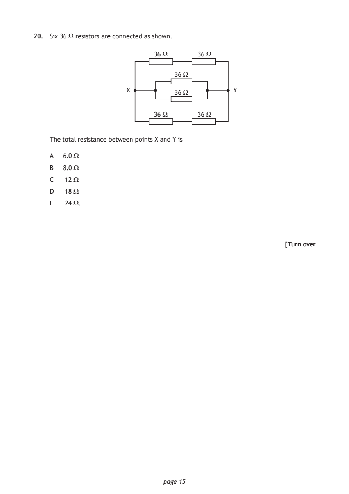
Selectable page text
20. Six 36 Ω resistors are connected as shown.
36 Ω 36 Ω
36 Ω
X Y
36 Ω
36 Ω 36 Ω
The total resistance between points X and Y is
A 6.0 Ω
B 8.0 Ω
C 12 Ω
D 18 Ω
E 24 Ω.
[Turn over
page 15PDF page 16
Paper 1, Question 21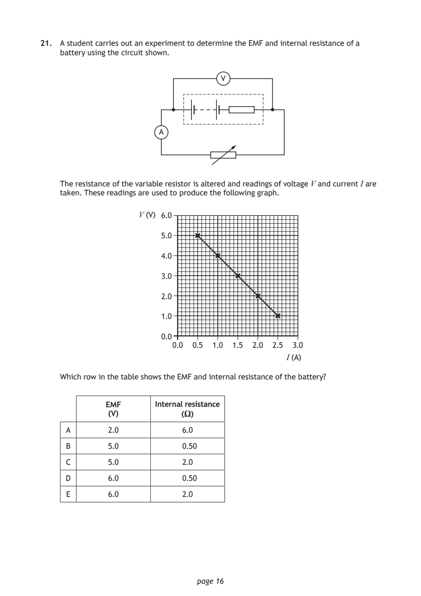
Selectable page text
21. A student carries out an experiment to determine the EMF and internal resistance of a
battery using the circuit shown.
V
A
The resistance of the variable resistor is altered and readings of voltage V and current I are
taken. These readings are used to produce the following graph.
V (V) 6.0
5.0
4.0
3.0
2.0
1.0
0.0
0.0 0.5 1.0 1.5 2.0 2.5 3.0
I (A)
Which row in the table shows the EMF and internal resistance of the battery?
EMF Internal resistance
(V) (Ω)
A 2.0 6.0
B 5.0 0.50
C 5.0 2.0
D 6.0 0.50
E 6.0 2.0
page 16PDF page 17
Paper 1, Question 22Paper 1, Question 23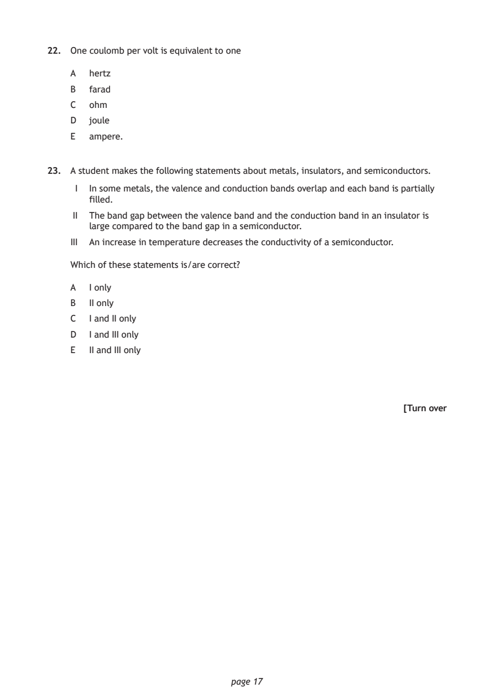
Selectable page text
22. One coulomb per volt is equivalent to one
A hertz
B farad
C ohm
D joule
E ampere.
23. A student makes the following statements about metals, insulators, and semiconductors.
I In some metals, the valence and conduction bands overlap and each band is partially
filled.
II The band gap between the valence band and the conduction band in an insulator is
large compared to the band gap in a semiconductor.
III An increase in temperature decreases the conductivity of a semiconductor.
Which of these statements is/are correct?
A I only
B II only
C I and II only
D I and III only
E II and III only
[Turn over
page 17PDF page 18
Paper 1, Question 24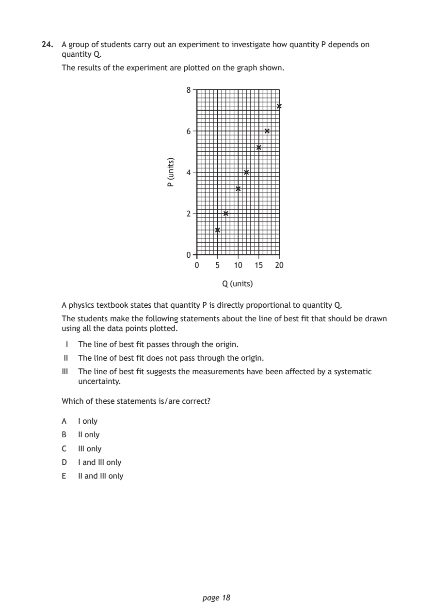
Selectable page text
24. A group of students carry out an experiment to investigate how quantity P depends on
quantity Q.
The results of the experiment are plotted on the graph shown.
0 5 10 15 20
Q (units)
page 18
)stinu(
P
8
6
4
2
0
A physics textbook states that quantity P is directly proportional to quantity Q.
The students make the following statements about the line of best fit that should be drawn
using all the data points plotted.
I The line of best fit passes through the origin.
II The line of best fit does not pass through the origin.
III The line of best fit suggests the measurements have been affected by a systematic
uncertainty.
Which of these statements is/are correct?
A I only
B II only
C III only
D I and III only
E II and III onlyPDF page 19
Paper 1, Question 25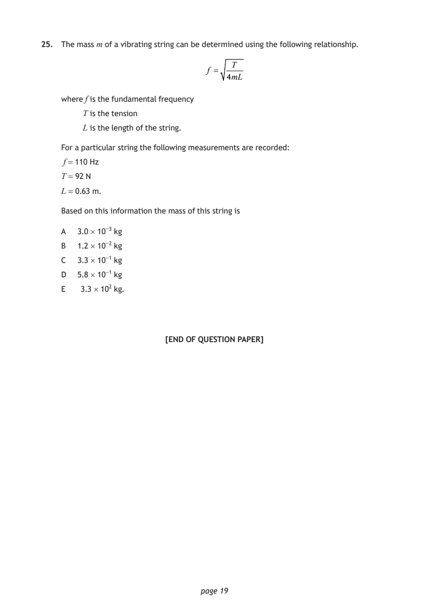
Selectable page text
25. The mass m of a vibrating string can be determined using the following relationship.
T
f =
4mL
where f is the fundamental frequency
T is the tension
L is the length of the string.
For a particular string the following measurements are recorded:
f = 110 Hz
T = 92 N
L = 0.63 m.
Based on this information the mass of this string is
A 3.0 × 10⁻³ kg
B 1.2 × 10⁻² kg
C 3.3 × 10⁻¹ kg
D 5.8 × 10⁻¹ kg
E 3.3 × 10² kg.
[END OF QUESTION PAPER]
page 19PDF page 20
Selectable page text
SPACE FOR ROUGH WORK
page 20